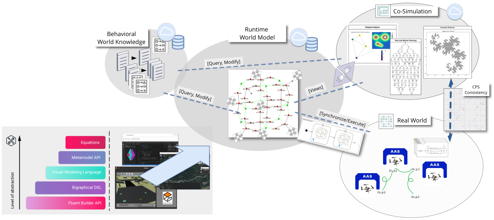

Overview
Welcome to this tutorial on building and programming smart drone swarms using Crazyflie tiny drones.
This tutorial presents a Gazebo-based simulation environment, Python control scripts to command individual or swarms of drones via simple web endpoints, and, at a later stage, a bigraph-driven programming model.
Specifically, the so-called UniAgent environment provides a full-stack setup to simulate and control autonomous Crazyflie collectives, from low-level motor commands to high-level swarm logic. It’s designed to support both research and practical experimentation in the perspective of drone coordination and spatial computing.
You’ll learn how to:
- Set up a simplified (i.e., a not yet very realistic) simulation environment using Gazebo with preset and custom worlds and the Crazyflie drone models.
- Use Python with the Crazyflie firmware stack to issue control commands.
- Define, control, and analyze collective behavior using bigraphs, a formalism well suited for modeling both connectivity and spatial configuration in dynamic systems.
Methodology

Reference:
- D. Grzelak, "Programming Drone Collectives: Towards Safe Plug-And-Play Modularity," in Proceedings of the 1st German Robotics Conference (GRC), Nürnberg, Germany: Robotics Institute Germany, Mar. 2025. Available: https://ras.papercept.net/conferences/conferences/GRC25/program/GRC25_ContentListWeb_1.html#thga_58. — Standalone video contribution (demo video, abstract, and poster)
- Poster
Software Stack
The software stack employed in this tutorial:
- sim_cf2 (Gazebo) (Simulation)
- cf.PyControl (cflib/Python) (Controller)
- Eclipse CDO (Database)
- Bigraph Framework, BDSL, Spring Data CDO (Java) (Frameworks)
Everything is open source and provided through Docker images for easy installation and use.